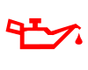
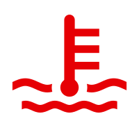
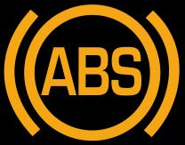
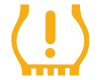
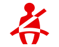
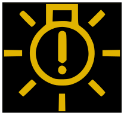
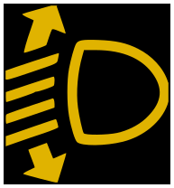
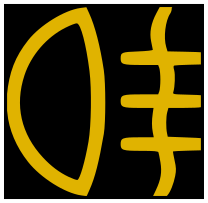
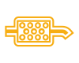
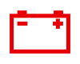

Rozsvítila se vám kontrolka? Její význam závisí na symbolu, barvě, způsobu svícení a případném hlášení na displeji. Některé kontrolky informují o zapnuté funkci, jiné upozorňují na omezení systému nebo závadu vyžadující okamžitou reakci.
Připravili jsme přehled vybraných kontrolek používaných u vozidel Volkswagen, Audi, Škoda, SEAT, CUPRA a Volkswagen Užitkové vozy. Konkrétní symboly a pokyny se mohou lišit podle modelu, roku výroby, výbavy a typu pohonu.
Vždy respektujte hlášení vozidla a návod k obsluze určený pro váš vůz. Samotná kontrolka neurčuje vadný díl ani nenahrazuje odborné zjištění příčiny závady.
Rozsah tohoto náhledu: 15 příkladů Volkswagen se spalovacím motorem. Nejde o úplný katalog ani o ověření pro celý Volkswagen Group. Konkrétní modelové roky nejsou uvedenými zdroji doloženy. Elektromobily, plug-in hybridy a ostatní značky zatím nejsou v obrazové sadě pokryté.
Zobrazeno 15 položek.
Pro zvolenou kombinaci nejsou v tomto náhledu doložené položky. Neznamená to, že daný vůz takovou kontrolku nemá.
Motor, mazání a chlazení

Tlak motorového olejeČervená · VýstrahaVýznam a postup
Význam
Výstraha upozorňuje na nedostatečný tlak motorového oleje. Správná hladina oleje sama o sobě nepotvrzuje dostatečný tlak mazání.
Doporučený postup
Bezpečně zastavte a vypněte motor. Nenechávejte jej běžet ani na volnoběh. Další postup včetně případného opětovného spuštění musí odpovídat návodu konkrétního vozidla; při nejasnosti kontaktujte odbornou pomoc.
Signalizace a odlišnosti
Svícení. Nezaměňovat se žlutým upozorněním na hladinu oleje. Zdroj popisuje také podmíněný postup po doplnění oleje; nejde o univerzální povolení opětovně nastartovat.
Rozsah platnosti
Příklad systému Volkswagen se spalovacím motorem z uvedeného přehledu pro britský trh. Model, generace a modelový rok nejsou zdrojem vymezeny. Platnost pro jiné značky ani pro konkrétní vůz tím není potvrzena.
Oficiální podklad Volkswagen (anglicky)
Grafika: Kontrollleuchte Oeldruck.svg, Benutzer:chris828; Public domain. Beze změny tvaru a barev.

Chladicí soustava spalovacího motoruČervená · VýstrahaVýznam a postup
Význam
Může upozorňovat na přehřátí, nesprávnou hladinu chladicí kapaliny nebo závadu chladicí soustavy.
Doporučený postup
Bezpečně zastavte, vypněte motor a respektujte hlášení vozidla. Kontrolu kapaliny provádějte podle návodu až po bezpečném vychladnutí. Neotvírejte horkou expanzní nádobu.
Signalizace a odlišnosti
Svícení. Výstrahu nepovažujte za vyřešenou pouze proto, že je v nádobě vidět kapalina. Tento záznam se nevztahuje na chlazení elektrického pohonu.
Rozsah platnosti
Příklad systému Volkswagen se spalovacím motorem z uvedeného přehledu pro britský trh. Model, generace a modelový rok nejsou zdrojem vymezeny. Platnost pro jiné značky ani pro konkrétní vůz tím není potvrzena.
Oficiální podklad Volkswagen (anglicky)
Grafika: ISO 7000 - Ref-No 0246.svg, Vectorization: Mrmw; Public domain. Monochromatický symbol ISO 0246 vykreslen červeně podle doložené varianty Volkswagen; odstraněny šedé rohové registrační značky předlohy, tvar kontrolky nezměněn.
Řízení motoru a emisní systém – MILŽlutá / jantarová · VýstrahaVýznam a postup
Význam
Řídicí systém zaznamenal závadu související s řízením motoru nebo emisním systémem. Kontrolka sama neurčuje vadnou součást.
Doporučený postup
Rozlišujte trvalé svícení a blikání. U příslušných provedení může blikání souviset s vynecháváním spalování. Pokud motor výrazně škube, vibruje nebo ztrácí výkon, bezpečně zastavte a kontaktujte odbornou pomoc. Jinak další postup určete podle hlášení a návodu vozidla.
Signalizace a odlišnosti
Svícení / blikání podle provedení. Smazání závady není odstraněním příčiny. Záznam neposkytuje univerzální povolení pokračovat v jízdě.
Rozsah platnosti
Příklad systému Volkswagen se spalovacím motorem z uvedeného přehledu pro britský trh. Model, generace a modelový rok nejsou zdrojem vymezeny. Platnost pro jiné značky ani pro konkrétní vůz tím není potvrzena.
Oficiální podklad Volkswagen (anglicky)
Grafika: Motorkontrollleuchte.svg, Benutzer:chris828; Public domain. Monochromatický předlohový symbol vykreslen žlutě podle doložené varianty Volkswagen; tvar nezměněn.
Žhavení a řízení vznětového motoruŽlutá / jantarová · Informace / upozorněníVýznam a postup
Význam
Krátké rozsvícení před nastartováním může být běžným projevem předehřevu. Rozsvícení nebo blikání při běžícím motoru může signalizovat závadu řízení motoru.
Doporučený postup
Respektujte hlášení a zajistěte kontrolu. Z tohoto symbolu nelze automaticky určit závadu žhavicích svíček.
Signalizace a odlišnosti
Krátké svícení před startem; svícení / blikání za chodu.
Rozsah platnosti
Volkswagen se vznětovým motorem, pouze provedení se symbolem žhavení v uvedeném zdroji. Model, generace a rok nejsou doloženy; nevztahuje se na benzinový ani čistě elektrický pohon.
Oficiální podklad Volkswagen (anglicky)
Grafika: Kontrollleuchte Vorgluehen.svg, Chris828 at German Wikipedia; Public domain. Beze změny tvaru a barev.
Brzdy a stabilizační systémy
Brzdová soustavaČervená · VýstrahaVýznam a postup
Význam
Podle provedení může symbol souviset se zataženou parkovací brzdou, nízkou hladinou brzdové kapaliny nebo závadou brzdové soustavy.
Doporučený postup
Rozhoduje konkrétní symbol a text. Pokud výstraha zůstává po uvolnění parkovací brzdy nebo vozidlo hlásí závadu brzd, bezpečně zastavte a vyhledejte odbornou pomoc.
Signalizace a odlišnosti
Svícení. Samotné doplnění brzdové kapaliny není opravou příčiny jejího úbytku. Poruchovou výstrahu odlišujte od běžného potvrzení aktivované parkovací brzdy.
Rozsah platnosti
Příklad systému Volkswagen se spalovacím motorem z uvedeného přehledu pro britský trh. Model, generace a modelový rok nejsou zdrojem vymezeny. Platnost pro jiné značky ani pro konkrétní vůz tím není potvrzena.
Oficiální podklad Volkswagen (anglicky)
Grafika: B01 Brake failure.svg, Ehsnils; CC BY-SA 3.0. Beze změny tvaru a barev.
Opotřebení brzdového obloženíŽlutá / jantarová · UpozorněníVýznam a postup
Význam
Systém sledování opotřebení upozorňuje na potřebu kontroly brzdového obložení.
Doporučený postup
Objednejte kontrolu brzd. Kontrolka neposkytuje spolehlivý údaj o počtu kilometrů, které ještě zbývají do výměny.
Signalizace a odlišnosti
Svícení. Nezaměňovat s červenou výstrahou závady brzdové soustavy.
Rozsah platnosti
Příklad systému Volkswagen se spalovacím motorem z uvedeného přehledu pro britský trh. Model, generace a modelový rok nejsou zdrojem vymezeny. Platnost pro jiné značky ani pro konkrétní vůz tím není potvrzena.
Oficiální podklad Volkswagen (anglicky)
Grafika: Kontrollleuchte Bremsbelagverschleiss.svg, Chris828 at German Wikipedia; Public domain. Beze změny tvaru a barev.

Protiblokovací systém brzd – ABSŽlutá / jantarová · Omezení funkceVýznam a postup
Význam
Systém ABS hlásí závadu. Protiblokovací funkce a podle provedení také stabilizace mohou být omezené.
Doporučený postup
Respektujte hlášení a zajistěte kontrolu brzdového systému. Pokud zároveň svítí červená výstraha brzd nebo je brzdění neobvyklé, bezpečně zastavte a zajistěte odbornou pomoc.
Signalizace a odlišnosti
Svícení. Žlutá kontrolka ABS sama nepotvrzuje vadný snímač otáček kola.
Rozsah platnosti
Příklad systému Volkswagen se spalovacím motorem z uvedeného přehledu pro britský trh. Model, generace a modelový rok nejsou zdrojem vymezeny. Platnost pro jiné značky ani pro konkrétní vůz tím není potvrzena.
Oficiální podklad Volkswagen (anglicky)
Grafika: B05 Anti-lock brake system malfunction.svg, Ehsnils; CC BY-SA 3.0. Beze změny tvaru a barev.
Řízení, podvozek a pneumatiky

Tlak v pneumatikách – TPMSŽlutá / jantarová · UpozorněníVýznam a postup
Význam
Symbol upozorňuje na nesprávný tlak v pneumatikách. Samotný symbol neurčuje konkrétní netěsnost.
Doporučený postup
Bezpečně zastavte a zkontrolujte pneumatiky i jejich tlak. Referenční hodnoty ukládejte až po správné kontrole a úpravě tlaku postupem stanoveným výrobcem.
Signalizace a odlišnosti
Svícení. Pouhé potvrzení nebo reset upozornění neopravuje defekt ani únik vzduchu. Přímé měření snímači a nepřímý systém podle otáčení kol nemají nutně stejný postup učení. Způsob blikání při závadě zde není doložen; určete jej podle modelového návodu.
Rozsah platnosti
Příklad systému Volkswagen se spalovacím motorem z uvedeného přehledu pro britský trh. Model, generace a modelový rok nejsou zdrojem vymezeny. Platnost pro jiné značky ani pro konkrétní vůz tím není potvrzena.
Oficiální podklad Volkswagen (anglicky)
Grafika: Warnlampe Druckverlust.svg, de:Benutzer:chris828; Copyrighted free use. Beze změny tvaru a barev.
Airbagy a bezpečnostní systémy
Airbagy a předpínače pásůŽlutá / jantarová · Omezení funkceVýznam a postup
Význam
Kontrolka může upozorňovat na závadu systému airbagů nebo předpínačů bezpečnostních pásů. Ochranná funkce může být omezená.
Doporučený postup
Respektujte hlášení a zajistěte odbornou kontrolu bezpečnostního systému.
Signalizace a odlišnosti
Svícení. Nezaměňovat s nápisem PASSENGER AIR BAG OFF, který má samostatný význam. Samotná kontrolka neurčuje vadný airbag.
Rozsah platnosti
Příklad systému Volkswagen se spalovacím motorem z uvedeného přehledu pro britský trh. Model, generace a modelový rok nejsou zdrojem vymezeny. Platnost pro jiné značky ani pro konkrétní vůz tím není potvrzena.
Oficiální podklad Volkswagen (anglicky)
Grafika: Kontrollleuchte Airbag.svg, de:Benutzer:chris828; Copyrighted free use. Beze změny tvaru a barev.

Bezpečnostní pásyČervená · Výzva k činnostiVýznam a postup
Význam
Připomíná nezapnutý bezpečnostní pás podle obsazeného sedadla a konkrétního provedení.
Doporučený postup
Před jízdou správně zapněte bezpečnostní pásy. Případné další hlášení posuďte podle návodu vozidla.
Signalizace a odlišnosti
Svícení. Nezaměňovat s poruchovou kontrolkou airbagů a předpínačů. Barva sama neznamená závadu motoru.
Rozsah platnosti
Příklad systému Volkswagen se spalovacím motorem z uvedeného přehledu pro britský trh. Model, generace a modelový rok nejsou zdrojem vymezeny. Platnost pro jiné značky ani pro konkrétní vůz tím není potvrzena.
Oficiální podklad Volkswagen (anglicky)
Grafika: Kontrollleuchte Gurtwarnung.svg, de:Benutzer:chris828; Copyrighted free use. Beze změny tvaru a barev.
Osvětlení a výhled

Závada vnějšího osvětleníŽlutá / jantarová · UpozorněníVýznam a postup
Význam
Systém sledování osvětlení upozorňuje na závadu některého vnějšího světla.
Doporučený postup
Na bezpečném místě zkontrolujte funkci vnějšího osvětlení a zajistěte odstranění závady. Řiďte se přesným hlášením vozidla.
Signalizace a odlišnosti
Svícení. Kontrolka sama neurčuje konkrétní žárovku nebo řídicí jednotku. Nezaměňovat s poruchou regulace dosahu světlometů.
Rozsah platnosti
Příklad systému Volkswagen se spalovacím motorem z uvedeného přehledu pro britský trh. Model, generace a modelový rok nejsou zdrojem vymezeny. Platnost pro jiné značky ani pro konkrétní vůz tím není potvrzena.
Oficiální podklad Volkswagen (anglicky)
Grafika: A14 Exterior bulb failure.svg, Ehsnils; CC BY-SA 3.0. Beze změny tvaru a barev.

Regulace dosahu světlometůŽlutá / jantarová · Omezení funkceVýznam a postup
Význam
U uvedeného provedení jde o závadu systému regulace dosahu světlometů.
Doporučený postup
Respektujte hlášení a objednejte odbornou kontrolu osvětlení.
Signalizace a odlišnosti
Svícení. Nejde o automatické určení vadného snímače výšky ani o shodný výklad všech variant adaptivního osvětlení.
Rozsah platnosti
Příklad systému Volkswagen se spalovacím motorem z uvedeného přehledu pro britský trh. Model, generace a modelový rok nejsou zdrojem vymezeny. Platnost pro jiné značky ani pro konkrétní vůz tím není potvrzena.
Oficiální podklad Volkswagen (anglicky)
Grafika: A04 Headlamp levelling control warning.svg, Ehsnils; CC BY-SA 3.0. Beze změny tvaru a barev.

Zapnuté zadní mlhové světloŽlutá / jantarová · Provozní informaceVýznam a postup
Význam
Kontrolka informuje o zapnutém zadním mlhovém světle.
Doporučený postup
Ověřte, zda jeho použití odpovídá podmínkám viditelnosti a pravidlům provozu. Není-li potřebné, vypněte jej.
Signalizace a odlišnosti
Svícení. Jde o informaci o zapnuté funkci, nikoli automaticky o závadu světla.
Rozsah platnosti
Příklad systému Volkswagen se spalovacím motorem z uvedeného přehledu pro britský trh. Model, generace a modelový rok nejsou zdrojem vymezeny. Platnost pro jiné značky ani pro konkrétní vůz tím není potvrzena.
Oficiální podklad Volkswagen (anglicky)
Grafika: A06 Rear fog light.svg, Ehsnils; CC BY-SA 3.0. Beze změny tvaru a barev.
Palivo, emise a AdBlue

Filtr pevných částic – DPFŽlutá / jantarová · UpozorněníVýznam a postup
Význam
U příslušných vznětových vozidel upozorňuje na nahromadění sazí a potřebu regenerace filtru.
Doporučený postup
Podmínky případné regenerační jízdy ověřte v návodu konkrétního vozidla. Pokud současně svítí další výstrahy nebo je provoz motoru neobvyklý, neprovádějte regenerační jízdu podle univerzálního internetového návodu.
Signalizace a odlišnosti
Svícení. Nejde o záznam pro benzinový filtr GPF/OPF. Rychlost, otáčky ani dobu z britského přehledu nepřenášíme jako univerzální postup.
Rozsah platnosti
Vybraná vznětová vozidla Volkswagen s DPF podle uvedeného přehledu. Konkrétní motor, model a rok nejsou vymezeny.
Oficiální podklad Volkswagen (anglicky)
Grafika: Kontrollleuchte DPF.svg, Chris828; CC0. Beze změny tvaru a barev.
Akumulátor a elektrická soustava

Elektrická soustava a dobíjeníČervená · VýstrahaVýznam a postup
Význam
U spalovacího vozidla může výstraha upozorňovat na závadu dobíjení nebo elektrické soustavy. Nejde automaticky o vadný akumulátor.
Doporučený postup
Přečtěte doprovodné hlášení a řiďte se návodem. Při současných dalších výstrahách nebo omezení funkcí bezpečně zastavte a zajistěte odbornou pomoc.
Signalizace a odlišnosti
Svícení. Tento záznam není výkladem 12V soustavy elektromobilu. U elektromobilu nelze tímto symbolem dovozovat závadu alternátoru.
Rozsah platnosti
Příklad systému Volkswagen se spalovacím motorem z uvedeného přehledu pro britský trh. Model, generace a modelový rok nejsou zdrojem vymezeny. Platnost pro jiné značky ani pro konkrétní vůz tím není potvrzena.
Oficiální podklad Volkswagen (anglicky)
Grafika: Kontrollleuchte Generator.svg, Chris828 at German Wikipedia; Public domain. Beze změny tvaru a barev.
Nejste si významem kontrolky jistí?
Při kontaktování servisu nám sdělte model, rok výroby, typ pohonu a přesný text hlášení. Pomůže také fotografie celé zprávy na přístrojovém panelu a informace, zda kontrolka svítí, nebo bliká. Fotografii pořizujte pouze u bezpečně odstaveného vozidla.
Provoz servisu: Po–Pá 9:00–18:00.
Kancelář a objednání: +420 605 399 448
Servis: +420 608 313 437
Nejde o nepřetržitou asistenční službu. Fotografii nelze použít jako jediný podklad k určení závady.
Podklady a rozsah odborné kontroly
Tato první obrazová sada vychází z konkrétních stránek Volkswagen UK. Nepřenáší britská telefonní čísla ani obecná povolení další jízdy. Přednost má návod konkrétního vozidla.
Oficiální návody Volkswagen podle konkrétního vozidla (anglicky). Pro ověření může být potřebné VIN; údaj se na tomto webu nezadává.
Modelové roky, další značky a elektrické pohony zatím nejsou doložené. Před zveřejněním musí proběhnout odborná kontrola textů a grafických přiřazení.
Otevřít evidenci všech zdrojů a chybějících podkladů · Úplná evidence JSON